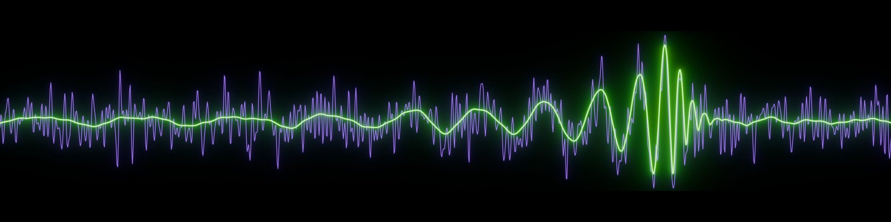

Presentations
This page contains the slides and video recordings of selected talks. A compilation of video recordings can be found at the cosmotalks project.
- The next frontier in gravitational-wave physics, seminar at Universitat de Barcelona, 2026 (slides)
- Celebrating the first decade of Gravitational Wave Astronomy:
slides
& event info at NBI
- A premiere on Gravitational Wave Cosmology, ICTP-SAIFR school, São Paulo, 2025 (materials; recordings: Lecture 1, Lecture 2, Lecture 3, Lecture 4, Lecture 5)
- Gravitational Wave Lensing, Lensing and Wave Optics in Strong Gravity (slides, recording)
- Gravitational Waves, COTB lectures, 2024 (slides)
- A premier on gravitational wave lensing, KICP workshop, 2023 (slides)
- LIGO-Virgo-KAGRA webinar for the first search of gravitational lensing signatures (2021)
- Probing the standard cosmological model with the population of binary black holes, APS April meeting 2021 (slides)
I am also starting a project to make visualizations of gravitational physics. You can find it here.